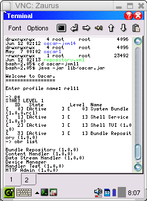
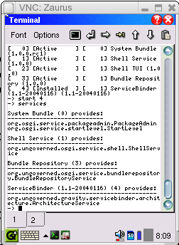
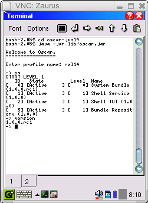

Oscar was not explicitly designed to run on Java's Micro Edition (i.e., J2ME), but care has been taken to not make it incompatible with it. Oscar requires the Java 2 API, so it will not execute on PersonalJava without modifications. However, Oscar does execute on J2ME Personal Profile without modifications. The following screenshots show Oscar running on a Sharp Zaurus.



If you have more questions, feel freel to contact me at heavy@ungoverned.org.
Richard S. Hall